Next: Module Mean Flow Up: Introduction Previous: Physics Contents
For the spatial discretisation, the water column is divided into 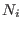 layers of not necessarily equal thickness 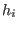,
The discrete values for the mean flow quantities  ,
,  ,
,  ,
and
,
and  represent interval means and are therefore located at the
centres of the intervals, and the turbulent quantities like
represent interval means and are therefore located at the
centres of the intervals, and the turbulent quantities like  ,
,  ,
,
 ,
,  ,
,  ,
,  ,
,  ,
,  ,
,  , and
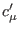 are positioned at the interfaces of the intervals (see
section 4.7). The indexing is such, that the interface
above an interval has the same index as the interval itself. This
means that mean flow quantities range from
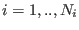 while
turbulent quantities range from
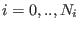 (see figure 1).
, and
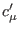 are positioned at the interfaces of the intervals (see
section 4.7). The indexing is such, that the interface
above an interval has the same index as the interval itself. This
means that mean flow quantities range from
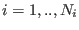 while
turbulent quantities range from
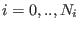 (see figure 1).
|
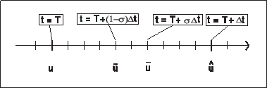
|
The time stepping is equidistant, based on two time levels and not limited by Courant numbers, because of the absence of advection and an implicit treatment of vertical diffusion, see figure 2. In the following, the discretisation of a simple diffusion equation,
| 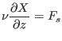 for 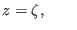 | (5) |
| 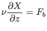 for 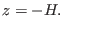 | (6) |
The semi-implicit discretisation of (4) can then be written as
| 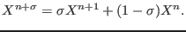 | (10) |
With the same strategy, a very similar system of equations can be derived for variables located at the interfaces of the grid cells, i.e. variables describing turbulence.
Karsten Bolding 2012-12-28